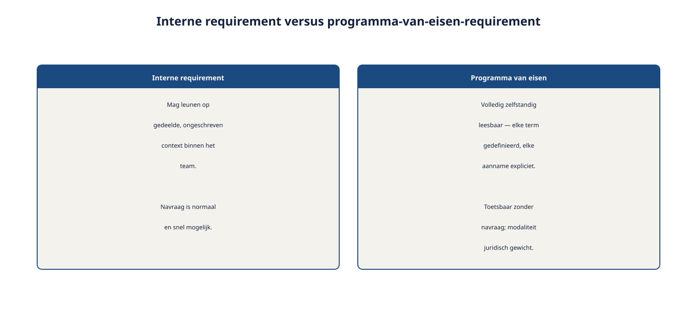

Deel 26 — Management Specialist: beheer op stelselniveau
Slidedeck · Ductus-cursus Requirements Engineering · niveau 3 (specialist) · deel 26 van 30 · 17 slides
Slide 1 — Management Specialist
Management Specialist
Beheer op stelselniveau
Cursus Requirements Engineering — Niveau 3, deel 26
Ductus
Slide 2 — Vandaag
Vandaag
- Een requirement die ook een contract is
- Interne versus contractuele baseline
- Requirements voor een programma van eisen
- Toegepast: de status van het Kwintes-document
- Specialist-trap afgerond
Slide 3 — Een gewone requirement kan worden bijgesteld zodra er beter inzicht is.
Een gewone requirement kan worden bijgesteld zodra er beter inzicht is.
Een contractuele requirement niet zomaar.
Het Kwintes-document is een contractbijlage.
Slide 4 — 1. Interne versus contractuele baseline
1. Interne versus contractuele baseline
Slide 5 — Twee heel verschillende dingen
Twee heel verschillende dingen
| Interne baseline | Contractuele baseline | |
|---|---|---|
| Wie stelt vast | Het programma zelf | Beide partijen samen |
| Wijzigen | Intern wijzigingsbeheer | Formele contractwijziging |
| Gevolg van afwijking | Heroverweging | Mogelijk juridisch/financieel |
Slide 6 — Figuur 26-1

Slide 7 — Opdracht 26.1
Opdracht 26.1 — Intern of contractueel?
Vier wijzigingen.
Individueel · 15 minuten
Slide 8 — 2. Requirements voor een programma van eisen
2. Requirements voor een programma van eisen
Slide 9 — Drie eisen, strenger dan intern
Drie eisen, strenger dan intern
- Volledig zelfstandig leesbaar — geen gedeelde, ongeschreven context
- Toetsbaar zonder navraag
- Juridisch verantwoord geformuleerd — moet/mag telt hier extra zwaar
Slide 10 — Figuur 26-2

Slide 11 — Opdracht 26.2
Opdracht 26.2 — Een requirement herschrijven
Voor een programma van eisen.
Tweetallen · 25 minuten
Slide 12 — 3. Toegepast: de status van het Kwintes-document
3. Toegepast: de status van het Kwintes-document
Slide 13 — Conclusie
Conclusie
- De gevonden gebreken zijn precies wat een programma van eisen had moeten voorkomen
- Niet zonder meer aanvaarden als baseline
- Formeel traject nodig, geen eenzijdige interne correctie
Slide 14 — Opdracht 26.3
Opdracht 26.3 — Een vakpaper-fragment schrijven
Schadeclaim of geen schadeclaim?
Individueel · 40 minuten
Slide 15 — Specialist-trap afgerond
Specialist-trap afgerond
Slide 16 — Vier modules, vier vakpapers
Vier modules, vier vakpapers
| Module | Deel | Kernvraag |
|---|---|---|
| Elicitation | 23 | Was de elicitatie gedegen? |
| Modeling | 24 | Sluiten de modellen op elkaar aan? |
| RE@Agile | 25 | Hoe integreer je dit in schaal-agile? |
| Management | 26 | Wat is de contractuele status? |
Slide 17 — Volgende keer: deel 27
Volgende keer: deel 27
Expert-rol — kennisoverdracht en RE-volwassenheid